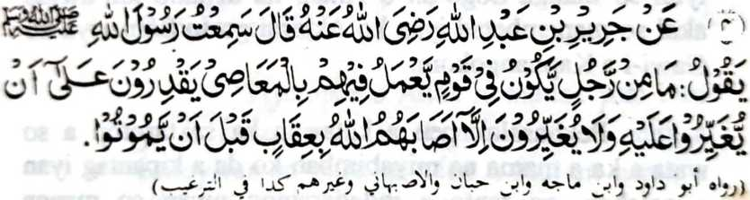
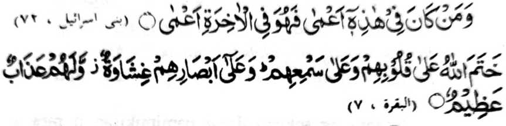

Miyaka thitayan ko Jarir bin Abdillah (Radhiallaho Anho) a pitharo iyan, “Miyaneg aken so Rasulollah (Sallallaho Alaihi Wasallam) a gi-i niyan tharo-on, ‘Da ko sakatao a mama a matatago ko isa ka Qaom a gi-i nggalebek ko zaron-sarongan niran sa dosa, a siran na khagaga iran a kisaparen iron non na da iran sapari, a ba siran di siksa-a o Allah sa malipedes ko ona-an pen o da iran kapamatay. [At-Targhib]
Hay manga pagari aken, a mazisinganin iran so kapaka-ozor o Islam ago so manga Muslim! Imanto na marayag a kiya-ilaya niyo ko kasasabapan ko kiyadarodos tano. Kowa-an tano ron den so manga salakao a tao, ka aya den a kalilid na apiya so manga ta-alok reketano ago so manga kamimilikan tano na di tano kiran izapar so kandosa. Da pen mapadalem ko pamikiran tano so kisaparen ko marata, aya pen o ba tano minggolalan. Apiya antona-a den-i gi-i nggalebeken o wata tano a mama a pekhisopak iyan ko manga Sogo-an o Allah, na di tano den zaparan, ogaid na o katago-i sekaniyan sa babaya ko kapholitika, o di na mamangeped ko satiman a partido, na kena ba ayabo a awida akal tano na so sekaniyan ka so pen so kamapiya-an ago bantogan tano. Oriyan niyan na pephaka-iketiyaren tano sekaniyan go gi-i tano pen pamimikiranen o anda manaya-i kalindinga tano rekaniyan ko langon o marata; ogaid na igira miyasopak iyan so manga Sogo-an o Allah, na di tano khi-awida akal so mapembetad iyan ko Akhirat go so Somariya ko Gawi-i a Kaphangokom.
Pekhasalak pen a katawan ka sa tarotop a so wata a ka a mama na miyabimban ko da a kipantag iyan a galebek, go tanto a indadarainon niyan so manga Sambayang; ogaid na da kano den katago-i sa panamar a kisaparen rekaniyan sangkanan a ola-ola, o di na di tano rekaniyan pen indaneg, minsan pen marayag so kinisogo-on non o Allah reka ko kathegas ka ko ka-angkat o lagida nan a manga rarata apiya mitolak ka so manga lolot ka a baradosa. Madakel den a manga ama a pekhararangitan niyan so wata iyan a mama igira bokelo a indadarainon niyan so kapephaganad iyan o di na so gi-i niyan kanggalebek [sa opisina] o di na so di niyan kapendagang, ogaid na ba aden a tao a kiyararangitan niyan so wata iyan a mama sabap ko di niyan kipenggolalanen ko manga rokon o Islam?
Aya mata-an, na so karata a rarad angka-iya kiyandarainon na kena ba tataman ko kala a kalapis ko Akhirat ka aya piyakarata-rata on sa ginawa na mararambit iyan pen so manga galebek tano ago kamapiya-an tano sa donya a tanto reketano a mala-i arga. Giyangka-i a kiyambengel-bota na tanto a piyakalek-lek sabap sa pitharo o Allah

"Na saden sa miyabaloy si-i (sa donya) a bota, na sekaniyan si-i ko Akhirat na bota den, go tanto a miya-awat ko lalan." [Surah Bani Israel:72]
‘Tiyotopan o Allah, so manga poso iran go so kaneg iran, na kiyatago-an so manga kailay ran sa piles; go aden a bagi-an niran a siksa alebi a mala." [Surah Al-Baqarah:7]